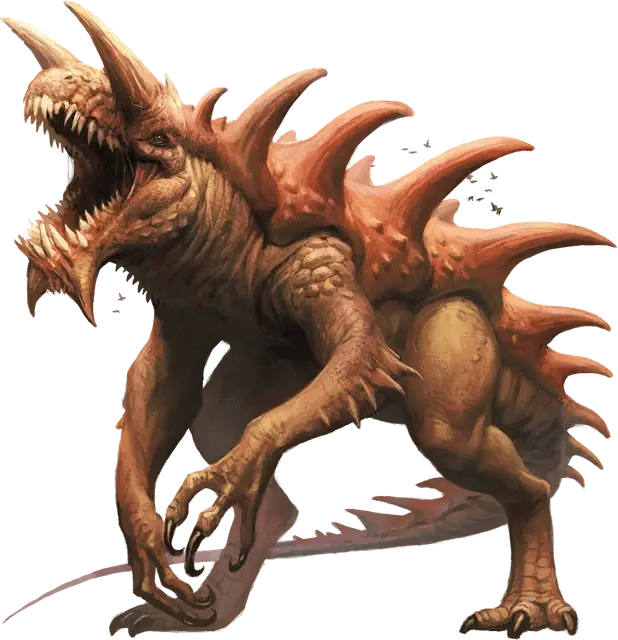

Тараск
Tarrasque
Громадный Монстр (Титан), без мировоззрения

Класс Доспеха 25 (природный доспех)
Хиты 676 (33к20 + 330)
Скорость 40 футов
| мод | спас | ||
|---|---|---|---|
| СИЛ | 30 | +10 | +10 |
| ЛОВ | 11 | +0 | +0 |
| ТЕЛ | 30 | +10 | +10 |
| мод | спас | ||
|---|---|---|---|
| ИНТ | 3 | −4 | +5 |
| МДР | 11 | +0 | +9 |
| ХАР | 11 | +0 | +9 |
Иммунитет к урону огонь, яд; дробящий, колющий, рубящий от немагических атак
Иммунитет к состояниям паралич, очарование, отравление, испуг
Чувства слепое зрение 120 футов, пассивное Восприятие 10
Опасность 30 (155000 опыта)
Бонус мастерства +9
Среда обитания Город
Особенности
Легендарное сопротивление (3/день). Если тараск проваливает спасбросок, он может вместо этого сделать спасбросок успешным.
Сопротивление магии. Тараск совершает с преимуществом спасброски от заклинаний и прочих магических эффектов.
Отражающий панцирь. Каждый раз, когда тараск становится целью заклинания волшебная стрела [Magic missile], заклинания с эффектом «линия», или заклинания, требующего бросок дальнобойной атаки, бросьте к6. При результате от «1» до «5» тараск не попадает под эффект заклинания. При результате «6» тараск не попадает под эффект заклинания, и эффект отражается в заклинателя, как если бы он исходил от тараска, делая целью заклинателя.
Осадное чудовище. Тараск причиняет двойной урон предметам и строениям.
Действия
Мультиатака. Тараск может использовать Ужасающее присутствие. Затем он совершает пять атак: одну укусом, две когтями, одну рогами, и одну хвостом. Вместо укуса он может использовать Проглатывание.
Укус. Рукопашная атака оружием: +19 к попаданию, досягаемость 10 футов, одна цель. Попадание: Колющий урон 36 (4к12 + 10). Если цель — существо, она становится схваченной (Сл высвобождения 20). Пока цель схвачена, она опутана, и тараск не может кусать другую цель.
Коготь. Рукопашная атака оружием: +19 к попаданию, досягаемость 15 футов, одна цель. Попадание: Рубящий урон 28 (4к8 + 10).
Рога. Рукопашная атака оружием: +19 к попаданию, досягаемость 10 футов, одна цель. Попадание: Колющий урон 32 (4к10 + 10).
Хвост. Рукопашная атака оружием: +19 к попаданию, досягаемость 20 футов, одна цель. Попадание: Дробящий урон 24 (4к6 + 10). Если цель — существо, она должна преуспеть в спасброске Силы Сл 20, иначе будет сбита с ног.
Ужасающее присутствие. Все существа на выбор тараска в пределах 120 футов от него, и знающие о его присутствии, должны преуспеть в спасброске Мудрости Сл 17, иначе станут испуганными на 1 минуту. Существо может повторять этот спасбросок в конце каждого своего хода, с помехой, если тараск находится в пределах линии обзора, оканчивая эффект на себе при успехе. Если спасбросок существа был успешным, или эффект на нем окончился, оно получает иммунитет к Ужасающему присутствию этого тараска на следующие 24 часа.
Проглатывание. Тараск совершает одну атаку укусом по схваченному существу с размером не больше Большого. Если эта атака попадает, цель получает урон от укуса, становится проглоченной, и захват прекращается. Будучи проглоченным, существо становится ослеплённым и опутанным, обладает полным укрытием от атак и прочих эффектов, исходящих снаружи, и получает урон кислотой 56 (16к6) в начале каждого хода тараска.
Если тараск получает в течение одного хода от находящегося внутри него существа урон 60 или больше, он должен в конце этого хода преуспеть в спасброске Телосложения Сл 20, иначе изрыгнет всех проглоченных существ, которые падают ничком в пространстве в пределах 10 футов от тараска. Если тараск умирает, проглоченное существо перестает быть опутанным им, и может высвободиться из трупа, используя 30 футов перемещения, и на выходе падает ничком.
Легендарные действия
Тараск может совершить 3 легендарных действия, выбирая из представленных ниже вариантов. За один раз можно использовать только одно легендарное действие, и только в конце хода другого существа. Тараск восстанавливает использованные легендарные действия в начале своего хода.
Атака. Тараск совершает одну атаку когтем или атаку хвостом.
Перемещение. Тараск перемещается на расстояние, не превышающее половину своей скорости.
Жевание (стоит 2 действия). Тараск совершает одну атаку укусом или использует Проглатывание.
Описание
Легендарный тараск, возможно, — самое страшное чудовище Материального Плана. Широко распространено мнение, что существует только одно такое существо, хотя никто не может предсказать, где и когда оно нападет.
Чешуйчатый и двуногий тараск достигает 50 футов в высоту, 70 футов в длину и весит сотни тонн. Он двигается словно хищная птица, наклонившись вперед и используя свой мощный, хлещущий хвост для равновесия. Его пасть, напоминающая пещеру, распахивается достаточно широко, чтоб проглотить что угодно, кроме самых огромных существ. И голод его настолько велик, что он может сожрать население целого города.
Легендарный разрушитель. Разрушительный потенциал тараска настолько велик, что в некоторых культурах он является частью религиозных учений, вплетающих его редкое появление в истории о божественном суде и гневе. Легенды гласят, что тараск дремлет в своем тайном убежище под землей, оставаясь в покое десятки и сотни лет. Просыпаясь в ответ на некий непостижимый космический зов, он восстает из глубин, чтобы уничтожить все на своем пути.